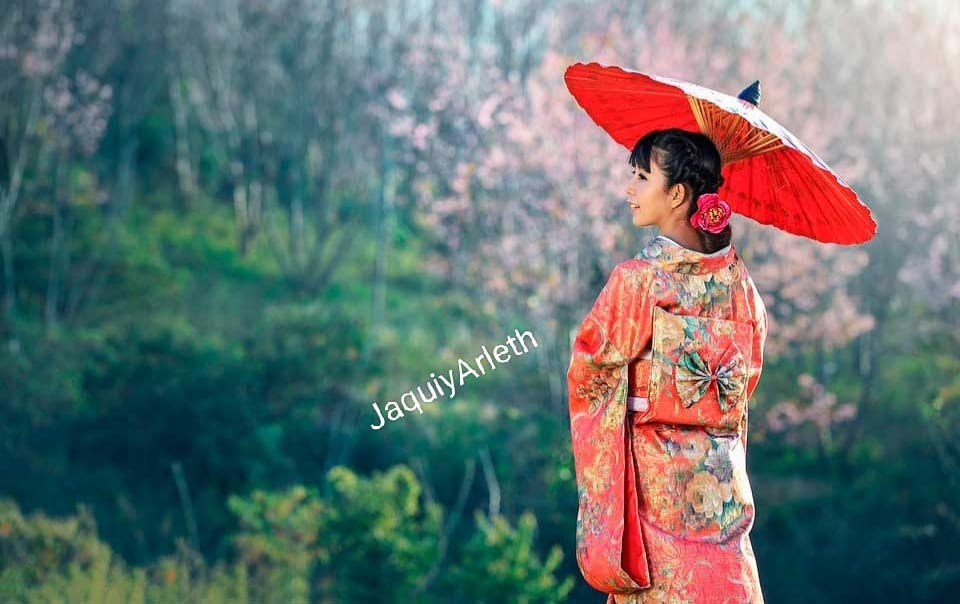
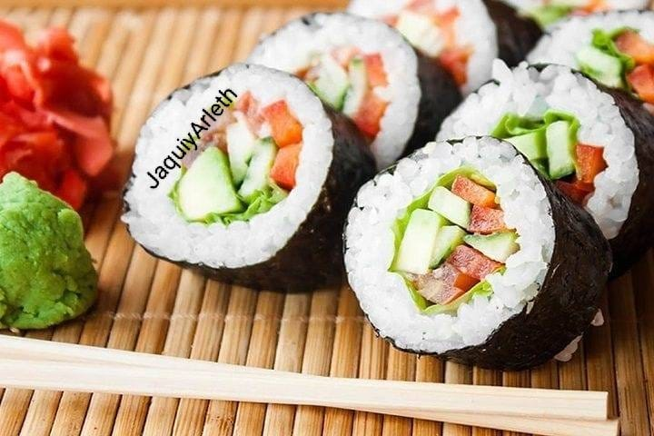

Kimono
El kimono es una túnica tradicional japonesa en forma de T con mangas largas y anchas, que se cruza por delante y se ciñe con un cinturón llamado obi..
Leer másDescubre datos curiosos de japón.

El kimono es una túnica tradicional japonesa en forma de T con mangas largas y anchas, que se cruza por delante y se ciñe con un cinturón llamado obi..
Leer másEl Castillo de Osaka fue construido en 1583 por el líder militar Toyotomi Hideyoshi, quien buscaba unificar a Japón.
Leer más
El sushi es un plato tradicional japonés cuya base indispensable es el arroz avinagrado (shari), el cual se combina con una gran variedad de ingredientes frescos.
Leer más